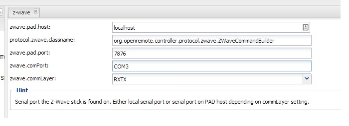

|
This page last changed on Feb 03, 2014 by dusty122.
Hi all,
Im running win7 and openremote pro controller and the aeon z-stick 2. All the drives are working and ive confirm that my zwave switch is connected to the zstick. Windows also sees the stick on COM3. When i load up teh controller i never get the mac address to show. Is something wrong in the configuration. Heres a screen shot of what i have.

Thanks
|
Not fully sure what the full picture is, but I guess you're trying to link your controller to your on-line account.
That link (and the controller MAC address being used) is totally independent from the Z-wave configuration.
Are you saying that the controller home page does not display any MAC address ?
Could you maybe post a screenshot (or send it to eric at openremote dot org)?

Posted by ebariaux at Feb 07, 2014 13:39
|
|
Hi Craig
I have the same problem. When I goto my Controller Pro homepage it says:
"This controller is linked to account ID: 95
Use "Controller management" in OpenRemote designer to remove link."
instead of showing MAC Address.
But when I go to my System Designer Account and choose "Controller management" there is no link to remove.
Did you solve your problem? Or do anybody have a suggestion?
Thanks in advance.
Regards Thorsten
Posted by hhtnh at Feb 26, 2014 20:48
|
|
Can you guys send me the Mac address of the machine you're running the controller from ?
eric at openremote dot org
Thanks
Posted by ebariaux at Feb 27, 2014 12:05
|
|
Hi Eric
Thanks for your reply.
My MAC address is 00-26-2D-38-48-11.
But it seems that it is not necessary to add the MAC address when running on a Windows PC. I Managed to make a "Hello World app" downloaded to my controller, without any controller in "Controller management".
Regards Thorsten
Posted by hhtnh at Feb 27, 2014 21:41
|
|
The "controller link" is not required for syncing the controller with a design in the cloud.
It is required for protocols such as Z-wave to push the auto-discovered devices to the designer.
Anyway, thanks for the information, this will help in investigating what's going wrong with the link.
Are you running Vista ? Do you have IPv6 enabled ?
If you don't need it, could you disable IPv6 and restart the controller to see if it still tells you it's linked to that account ?
Posted by ebariaux at Feb 28, 2014 12:16
|
|
Hi Eric
I am running Win7 64bit.
I tried to Disable IPv6 and that helped. Then I got the MAC message and were able to link the Controller in the "Controller Management". So than kyou very much.
The Next step for me is to connect my Z-Wave USB stick. It is on COM5 and I put zwave.commPort=COM5 in the designer. I have tried "COM5", just "5" and the full name "Silicon Labs CP210x USB to UART Bridge (COM5)". But all with the same problem below.
When I start the controller it gives me a message:
------------
INFO 2014-03-01 19:31:08,644 :
--------------------------------------------------------------------
DEPLOYING NEW CONTROLLER RUNTIME...
--------------------------------------------------------------------
WARNING: RXTX Version mismatch
Jar version = RXTX-2.2pre1
native lib Version = RXTX-2.1-7
gnu.io.NoSuchPortException
at gnu.io.CommPortIdentifier.getPortIdentifier(CommPortIdentifier.java:269)
at org.openremote.controller.protocol.zwave.ZWaveGatewayRxtx$ZWaveConnectionThread.run(ZWaveGatewayRxtx.java:108)
INFO 2014-03-01 19:31:18,869 : No Vera address configured, device auto-discovery won't be possible.
---------------------
I googled on this and I can see others having the same problem, but I can not find a solution. It seems that it cannot find my port. But why not?
Do you have any suggestion? Really appreciating any help.
Best regards Thorsten
Posted by hhtnh at Mar 01, 2014 18:42
|
|
"COM5" would be correct. Do you have RXTX in 64bit? There were some threads about it on the forums where people had the same issue in Win7 64bit.
Also, do you see anything in the log files when you have IPv6 turned on? Maybe that helps to investigate why the MAC message is not displayed.
Posted by mredeker at Mar 02, 2014 20:56
|
|
Hi Again
Actually I am running OpenRemote Controller from a 32bit CMD window, and using a 32bit Java, but on a 64 bit Windows 7.
As a desperate attempt I tried to configure my designer for COM1, synced my controller and then it found my ZWave USB stick and my device connected. I logged out of the designer and in again. Then it autodetected my Zwave device as it was supposed to do. And then the strange thing: The COM port configuration was set back to COM5..??
I still get the Warning about RXTX versions, but it seems that it is no problem.
Regarding the IPv6 stuff I did not see for the logs when the IPv6 was turned on, and now I do not dare turning it on again. Sorry Marcus.
Thank you for your help Eric and Marcus. I will continue working until next hurdle 
Best Regards Thorsten
Posted by hhtnh at Mar 04, 2014 20:42
|
|
Don't worry about the IPv6. We already have an idea what the problem might be.
Posted by mredeker at Mar 04, 2014 21:07
|
|
Hello,
I am running a OpenRemote-Controller-Pro1.0.12 on 64bit Windows7 machine and I am having the same issue:
This controller is linked to account ID: 95
Use "Controller management" in OpenRemote designer to remove link.
Additionally when running the controller I get the following message:
10-Apr-2014 16:11:46 org.restlet.engine.http.connector.HttpClientHelper start
INFO: Starting the default HTTP client
10-Apr-2014 16:11:48 org.restlet.engine.http.connector.HttpClientHelper stop
INFO: Stopping the default HTTP client
10-Apr-2014 16:11:53 org.restlet.engine.http.connector.HttpClientHelper start
INFO: Starting the default HTTP client
10-Apr-2014 16:11:55 org.restlet.engine.http.connector.HttpClientHelper stop
INFO: Stopping the default HTTP client
Best regards,
Cristina Chira
ps. I have IPv6 ENABLED.
my MAC address is : C4-85-08-30-A0-9E
Posted by ckbsmart at Apr 10, 2014 14:14
|
|
{kind=link}